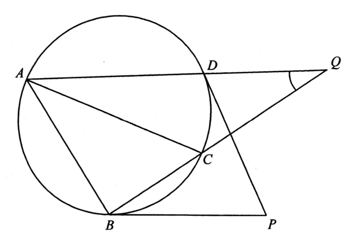

幾何 · 圓與切線

$$\angle BOD=180^{\circ}-68^{\circ}=112^{\circ}$$
$\angle BAD$ 對着弧 $BD$，故
$$\angle BAD=\frac{112^{\circ}}{2}=56^{\circ}$$
$$\angle ABC=90^{\circ}$$
因為 $Q$ 在 $BC$ 的延長線上，$\angle ABQ=\angle ABC=90^{\circ}$。
$$\angle AQB=180^{\circ}-\angle QAB-\angle ABQ=180^{\circ}-56^{\circ}-90^{\circ}=34^{\circ}$$
其中 $\angle QAB=\angle DAB=56^{\circ}$（$Q$ 在 $AD$ 的延長線上）。答案為 D。